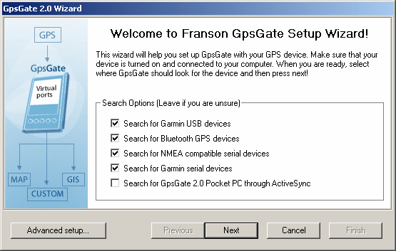
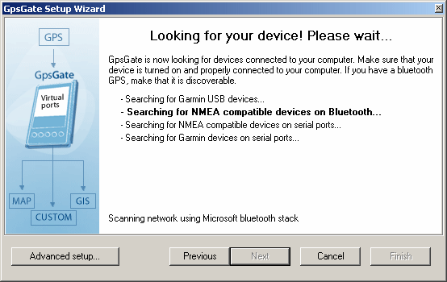

GpsGate
GpsGate ausführen
Sie können GpsGate unter Start→Programme→KADAS→GpsGate starten.
Bei der ersten Ausführung von GpsGate wird ein Setup-Assistent gestartet. Der Assistent hilft Ihnen, Ihr GPS zu finden und erklärt Ihnen, wie Sie Ihre GPS-Anwendungen mit GpsGate verbinden.
Ausführen des Setup-Assistenten
Stellen Sie sicher, dass Sie Ihr GPS einschalten und mit Ihrem Computer verbinden, wenn es sich um ein drahtloses Bluetooth-GPS handelt, schalten Sie es einfach ein. Um die Suche zu beschleunigen, können Sie Arten von GPS-Empfängern deselektieren, nach denen Sie nicht suchen möchten. Wenn Sie unsicher sind, lassen Sie alle Optionen aktiviert. Klicken Sie anschließend auf "Weiter" und der Assistent wird Ihren Computer nach einem angeschlossenen GPS scannen.
Wenn Sie ein fortgeschrittener Benutzer sind, klicken Sie auf "Erweitertes Setup..." für einen Setup-Prozess, bei dem Sie die vollständige Kontrolle haben. Sie können den Assistenten jederzeit über den Einstellungsdialog erneut ausführen.

Klicken Sie auf Weiter. Der Assistent beginnt nun mit der Suche nach einem GPS. Dies kann einige Zeit in Anspruch nehmen.

Wenn der Assistent ein GPS findet, wird ein Meldungsdialog angezeigt. Klicken Sie auf "Ja", um das gefundene GPS als Eingabe zu übernehmen. Wenn Sie mehrere GPS-Empfänger angeschlossen haben, klicken Sie auf "Nein", bis GpsGate den gewünschten Empfänger findet.

Wenn GpsGate Ihr GPS nicht findet, müssen Sie "Advanced Setup..." verwenden.
Wählen Sie Output und klicken Sie auf "Weiter". Wenn Sie sich nicht sicher sind, klicken Sie einfach auf "Weiter".

Der nächste Bildschirm zeigt eine Zusammenfassung an. Es ist wichtig, diese Zusammenfassung zu speichern. Sie können es in einer Datei speichern und ausdrucken. Diese Informationen finden Sie auch später im Dialog Einstellungen (aus dem Tray-Menü).
Sie verbinden Garmin-Anwendungen wie nRoute mit dem ersten Port in der Liste und andere NMEA-Anwendungen mit den übrigen Ports. Sie können immer nur eine Anwendung mit einem Port gleichzeitig verbinden. Wenn Sie weitere Ports erstellen müssen, können Sie dies jederzeit über den Einstellungsdialog tun.

Nun können Sie Ihre GPS-Anwendungen starten und an die von GpsGate im letzten Schritt oben erstellten Ports anschließen. Sie können alle GPS-Anwendungen gleichzeitig ausführen!
Wenn GpsGate läuft, wird es als Tray-Symbol angezeigt. Durch Anklicken dieses Symbols gelangen Sie zu seinen Funktionen.

Sie können den Assistenten jederzeit erneut ausführen, indem Sie im Dialogfeld Einstellungen auf "Setup Wizard..." klicken. Farben und Formen der Tray-Icons
Das Tray-Symbol zeigt immer den Status von GpsGate an. Hier ist eine Liste der möglichen angezeigten Tray-Symbole:
 Es werden keine GPS- oder NMEA-Daten vom GpsGate erkannt.
Es werden keine GPS- oder NMEA-Daten vom GpsGate erkannt.
Gültige GPS-Daten wurden am ausgewählten Eingang erkannt, aber die GPS-Daten sind nicht fixiert, d.h. sie können ihre Position (noch) nicht bestimmen.
Eine gültige GPS-Position (Fix) wurde am ausgewählten Eingang erkannt.
Wenn das Tray-Symbol nicht grün ist, wird Ihre GPS-Anwendung keine korrekte Position anzeigen/verwenden.